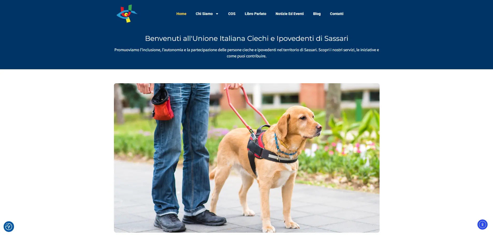
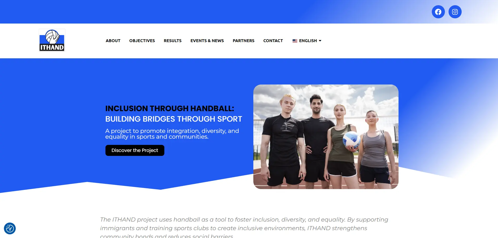
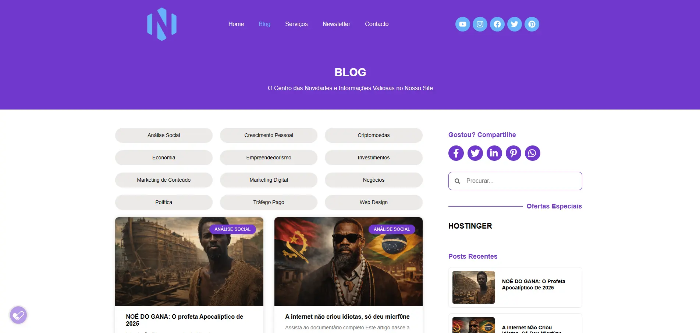
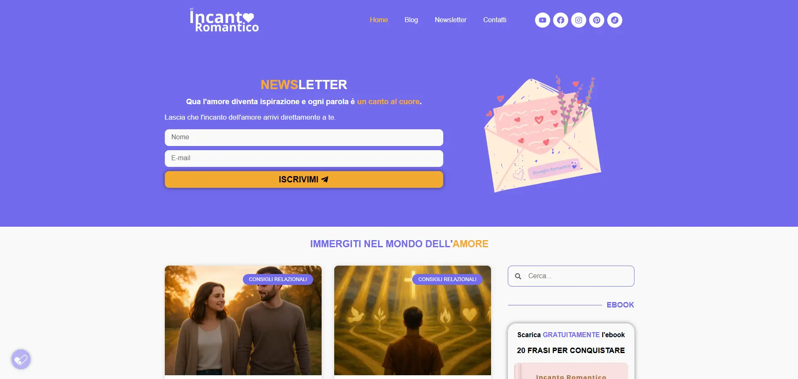
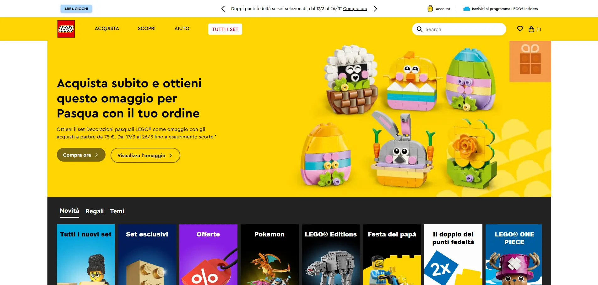
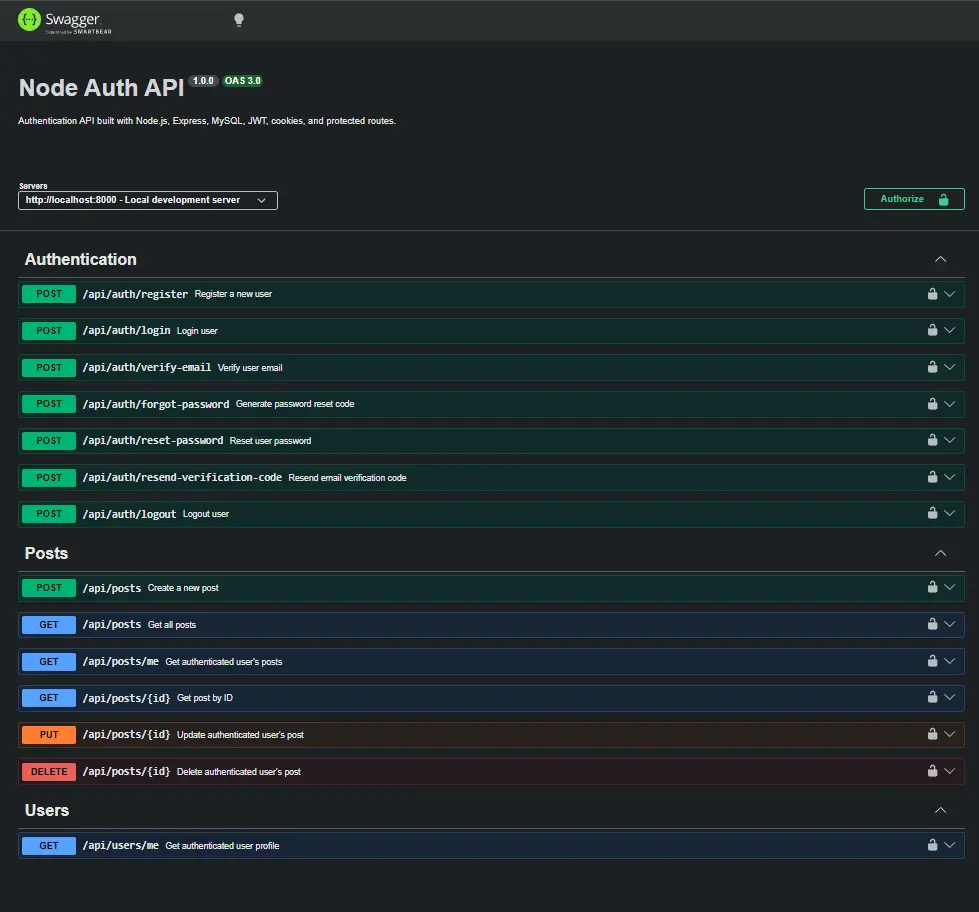
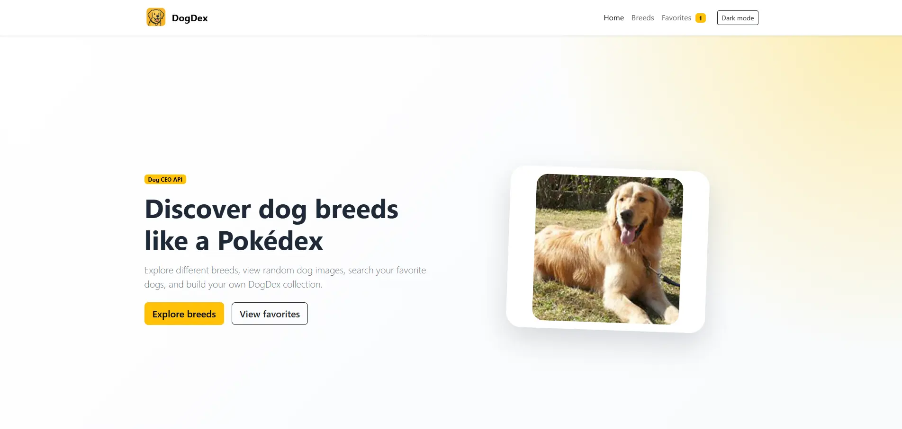
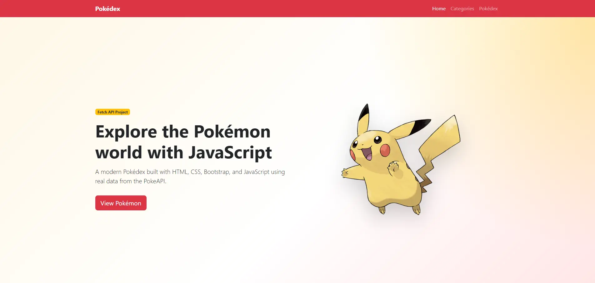
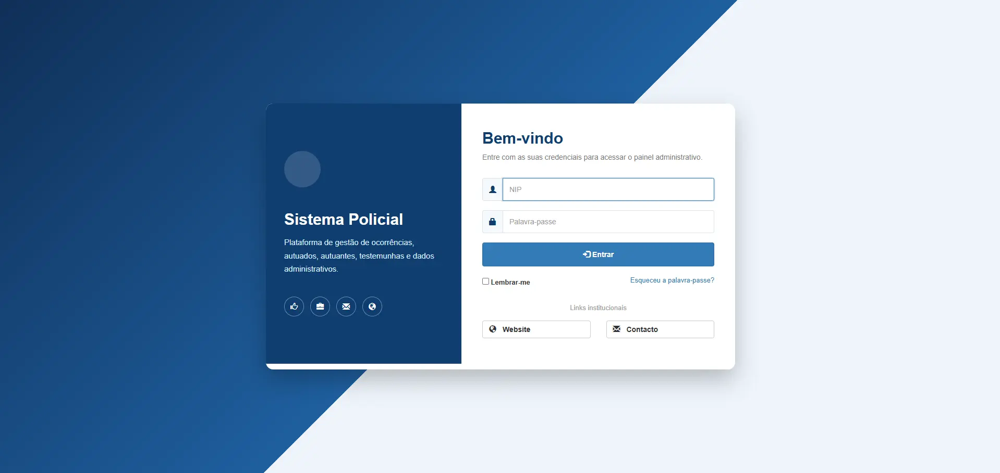

Front-End
HTML5, CSS3, JavaScript, jQuery, Bootstrap 3/5, responsive design e compatibilità cross-browser.
Front-End Web Developer
Sono Nicolau Alfredo, sviluppatore front-end con esperienza pratica in HTML5, CSS3, JavaScript, Bootstrap, jQuery, WordPress e sviluppo di interfacce web responsive per progetti reali.
Sviluppo interfacce pulite, responsive e compatibili con diversi browser, con attenzione a struttura HTML semantica, CSS modulare e JavaScript chiaro.
Profilo
Ho esperienza nello sviluppo e nella gestione di siti web responsive, landing page e progetti digitali pubblicati online. Mi occupo della parte front-end, della personalizzazione WordPress, dell'ottimizzazione UX/UI e della gestione tecnica di hosting, domini e pubblicazione.
Il mio obiettivo è creare interfacce semplici da usare, tecnicamente solide e adatte a diversi dispositivi, collaborando in modo chiaro con team, designer e clienti.
Competenze
Stack focalizzato sullo sviluppo front-end per siti, portali e interfacce responsive.
HTML5, CSS3, JavaScript, jQuery, Bootstrap 3/5, responsive design e compatibilità cross-browser.
Installazione, configurazione, personalizzazione temi, Elementor, gestione contenuti e manutenzione.
Git, GitHub, VS Code, gestione hosting, domini, DNS, cPanel e pubblicazione di siti web.
PHP, Java, Node.js, Python, MySQL, API REST e logiche CRUD utili per collaborare su progetti web completi.
Layout adattabili, mobile-first approach, attenzione alla leggibilità e alla user experience.
Ottimizzazione base per performance, struttura contenuti, SEO tecnico e miglioramento dell'esperienza utente.
Portfolio

Sito web per una sezione territoriale, con attenzione alla chiarezza dei contenuti, accessibilità, struttura informativa e gestione WordPress.
Visita progetto
Progetto web internazionale Erasmus+ con focus su comunicazione istituzionale, struttura responsive e gestione dei contenuti.
Visita progetto
Sito personale sviluppato per presentare contenuti, competenze digitali, progetti e identità professionale online.
Visita progetto
Sito editoriale in italiano dedicato alla pubblicazione di testi e poesie, con focus su esperienza di lettura e identità visiva.
Visita progetto
Interfaccia front-end ispirata a un e-commerce, con carousel dinamico, componenti responsive e gestione dei prodotti via JavaScript.
Visita progetto
API backend per autenticazione, utile a dimostrare conoscenze full-stack, documentazione Swagger e integrazione con database MySQL.
Vedi su GitHub
Web application responsive sviluppata con HTML, CSS, JavaScript e Bootstrap 5, integra la Dog CEO API per visualizzare razze canine.
Visita progetto
Web application sviluppata con HTML5, CSS3 e Vanilla JavaScript che utilizza la PokeAPI per recuperare e visualizzare dati dinamici sui Pokémon. JavaScript.
Visita progetto
Sistema gestionale full-stack sviluppato con Java EE, JSP, JDBC, MySQL e Bootstrap. Il progetto include autenticazione, CRUD completi, paginazione dinamica, filtri avanzati, architettura MVC.
Vedi su GitHubDisponibile per nuove opportunità
Sono interessato a opportunità come Front-End Developer in team orientati alla qualità, alla collaborazione e alla crescita tecnica.
ScrivimiContatti
Puoi contattarmi via email, LinkedIn o GitHub. Sono disponibile per colloqui, collaborazioni e opportunità come Front-End Web Developer.